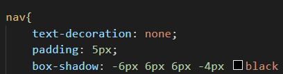

Notícias sobre o Clube Atlético Mineiro
Para inserirmos uma sombra em um determinado elemento, utilizamos a tag box-shadow passamos as medidas em px e a cor da sombra, conforme no exemplo abaixo: Outra diga, podemos em inspecionar no site e ir configurando para ver como alterar o site e depois copiar as configurações númericas e copiar em nosso código. A sombra não deve ser muito forte, para isso alteramos a sua transparência e normalmente usamos preto para representar sombra. Para usarmos uma sombra para fora, utilizamos o inset, depois do box-shadow:
